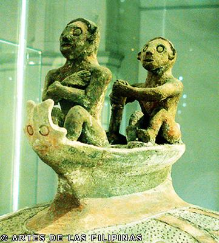

ALAMIN NATIN!

Ano ang kaluluwa?
Ang tao ay may dalawang bahagi ang panlabas at ang panloob. Sa panlabas ay ang katawan at sa panloob naman ay ang ginhawa o life force at ang kaluluwa. Ang ginhawa ay matatagpuan sa bituka at ang kaluluwa naman ay sa isip. Ang pagkakaroon ng hindi pagbuti ng ginhawa at ang pagsama ng kaluluwa ay naririnig gamit ang ating bibig o salita.
Paniniwala sa kaluluwa
Naniniwala ang mga sinaunang Pilipino na ang kaluluwa ay lumalabas ng ating katawan kahit na tayo ay buhay pa at maari ring pasukin ng masamang espiritu. Maaring lumabas o pumasok ang espiritu sa ating bibig, mata, ilong at mga dulo ng daliri.
Paano ito mapapanatili sa ating katawan?
Gumagamit ang mga sinaunang Pilipino ng mga gintong Agimat upang proteksiyunan ito.

- Hikaw
- Sinturon
- Ginto sa ngipin
- Sash
- Singsing
- at iba pa
Ano ang kinalaman sa paniniwala sa kamatayan o langit?
Kung susuriin nating mabuti, ang ginhawa na nanggagaling sa bituka at kaluluwa na nasa isip ay bumubuo ng tuwid na linya. Kadalasan sinasabi natin itong tuwid ang kaluluwa. At ang tuwid na ito ay tumuturo sa kalangitan. Kapag hindi magkatugma ang kaluluwa at ginhawa madalas nating silang tawaging "Halang ang kaluluwa" o hindi tuwid kaya nakapagsasabi ng hindi mabuti sa kapwa.
Nausog
Kapag ang taong may malakas na kaluluwa ay binati ang bata at sumama ang pakiramdam nito, madalas nating sinasabing NAUSOG o NAUSOD ang kaluluwa ng bata. Ibig sabihin ay hindi tuwid ang kaluluwa nito. Ang pag-iyak ay simbolo na ang kaniyang kaluluwa ay wala sa ayos.
Kasabihan
Kumain ka at huwag magpapagutom at baka lisanin ka ng iyong kaluluwa. Kumain ka at huwag magpapagutom(bituka o pinagmumulan ng ginhawa) at baka lisanin ka ng iyong kaluluwa. (Kaluluwa ay pag-iisip).
Ano ang dahilan bakit nakabuo sila ng konsepto ng paglalakbay ng kaluluwa?
Noon pa man, kinakikitaan na ang mga Pilipino ng pagiging malapit sa kanilang pamilya. Noon, isa sa paraan ng pagkakaroon ng ginhawa ay ang paglalayag at pagbalik nang may dalang kagamitan mula sa ibang dako. Upang maibsan ang kanilang pagkalumbay, iniisip na lamang ng mga sinaunang Pilipino na sila ay naglalakbay upang magbigay ng ginhawa. Saan ka man naroon, gabayan mo kami. Ipinakikita nito ang pagbibigay ginhawa kahit ang tao ay namayapa na.